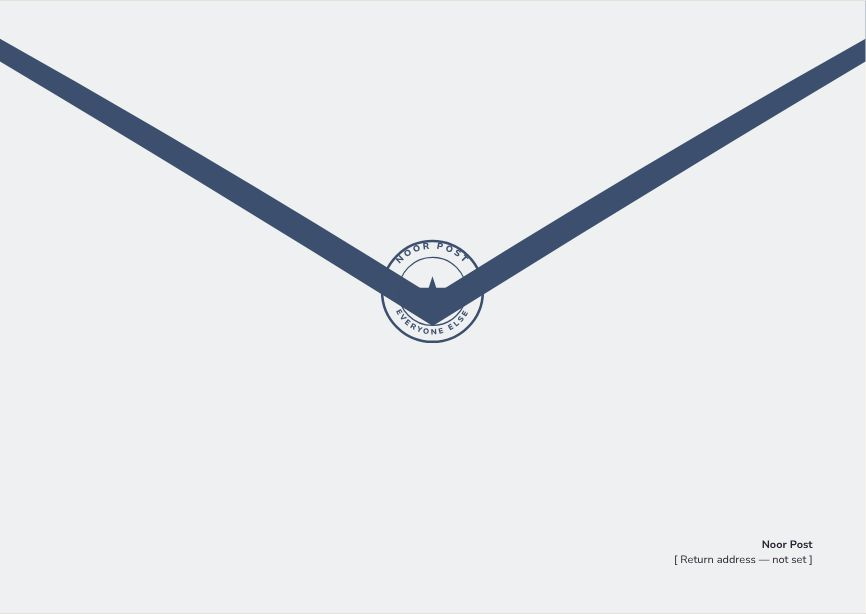
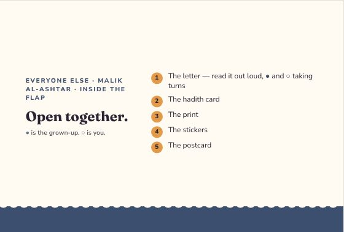
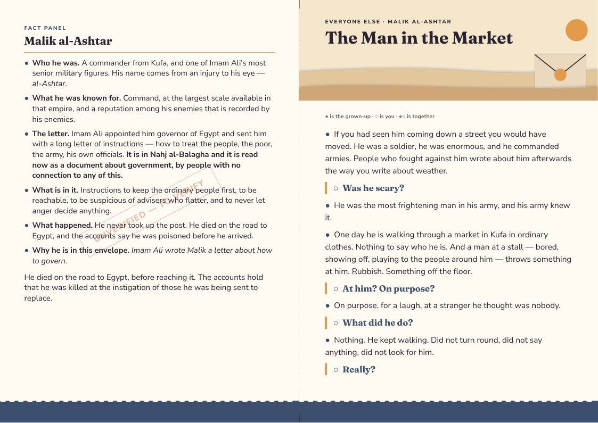
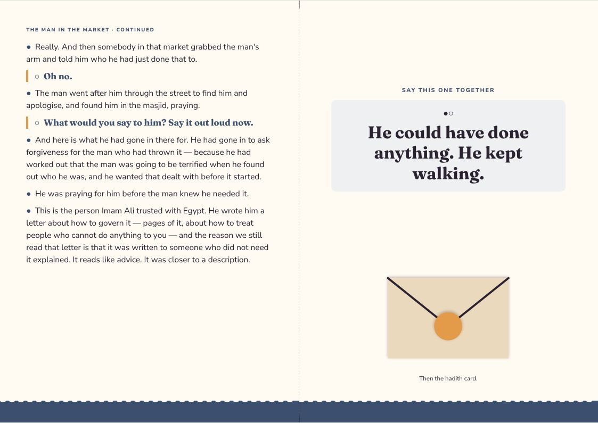
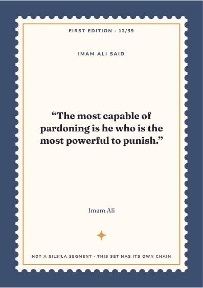
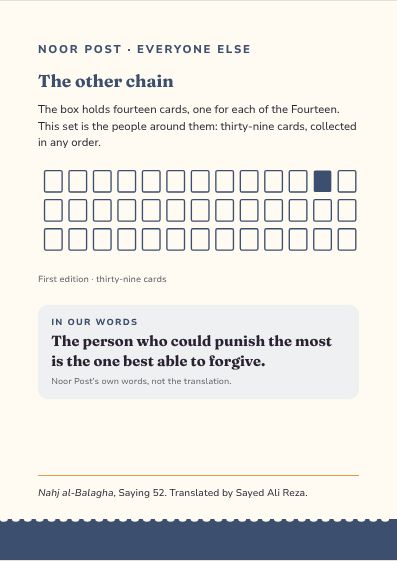
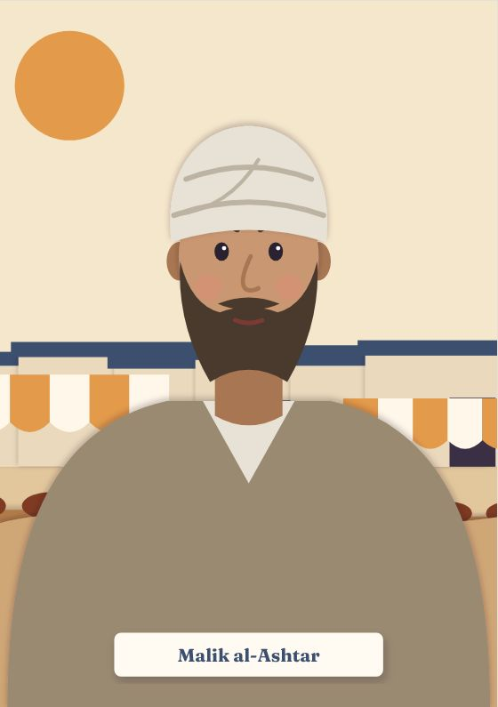
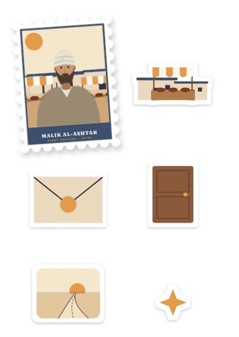
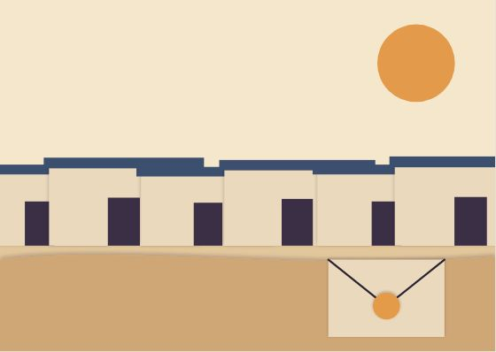

Everyone Else
Malik al-Ashtar
Imam Ali wrote Malik a letter about how to govern.
Inside the flap
Open together.
- The letter — read it out loud, ● and ○ taking turns
- The hadith card
- The print
- The stickers
- The postcard
● is the grown-up. ○ is you.
The Man in the Market
● the grown-up · ○ the child · ●○ together
●If you had seen him coming down a street you would have moved. He was a soldier, he was enormous, and he commanded armies. People who fought against him wrote about him afterwards the way you write about weather.
○Was he scary?
●He was the most frightening man in his army, and his army knew it.
●One day he is walking through a market in Kufa in ordinary clothes. Nothing to say who he is. And a man at a stall — bored, showing off, playing to the people around him — throws something at him. Rubbish. Something off the floor.
○At him? On purpose?
●On purpose, for a laugh, at a stranger he thought was nobody.
○What did he do?
●Nothing. He kept walking. Did not turn round, did not say anything, did not look for him.
○Really?
●Really. And then somebody in that market grabbed the man's arm and told him who he had just done that to.
○Oh no.
●The man went after him through the street to find him and apologise, and found him in the masjid, praying.
○What would you say to him? Say it out loud now.
●And here is what he had gone in there for. He had gone in to ask forgiveness for the man who had thrown it — because he had worked out that the man was going to be terrified when he found out who he was, and he wanted that dealt with before it started.
●He was praying for him before the man knew he needed it.
●This is the person Imam Ali trusted with Egypt. He wrote him a letter about how to govern it — pages of it, about how to treat people who cannot do anything to you — and the reason we still read that letter is that it was written to someone who did not need it explained. It reads like advice. It was closer to a description.
●○He could have done anything. He kept walking.
Letter, reverse
MALIK AL-ASHTAR
●Who he was. A commander from Kufa, and one of Imam Ali's most senior military figures. His name comes from an injury to his eye — al-Ashtar.
●What he was known for. Command, at the largest scale available in that empire, and a reputation among his enemies that is recorded by his enemies.
●The letter. Imam Ali appointed him governor of Egypt and sent him with a long letter of instructions — how to treat the people, the poor, the army, his own officials. It is in Nahj al-Balagha and it is read now as a document about government, by people with no connection to any of this.
●What is in it. Instructions to keep the ordinary people first, to be reachable, to be suspicious of advisers who flatter, and to never let anger decide anything.
●What happened. He never took up the post. He died on the road to Egypt, and the accounts say he was poisoned before he arrived.
●Why he is in this envelope. Imam Ali wrote Malik a letter about how to govern.
He died on the road to Egypt, before reaching it. The accounts hold that he was killed at the instigation of those he was being sent to replace.
Hadith card · First Edition 12 / 39
The most capable of pardoning is he who is the most powerful to punish.
Nahj al-Balagha, Saying 52 · trans. Sayed Ali Reza
A saying of Imam Ali, matched to gentleness in authority.
The design
Everyone Else — one style for the line
Every companion envelope shares one style, so the thirty-nine belong together: each front carries its person as a stamp. Every item at true size → · Print PDF



















The artwork fixes composition, colour and medium for every item; final illustration is still to be commissioned. The fact panel is still to verify.